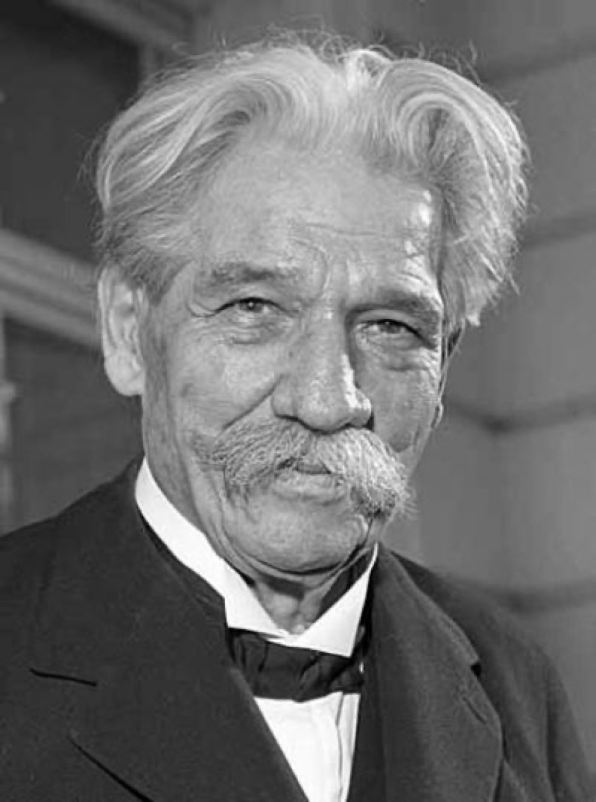

Schweitzer's Bach: the tone-poet of the chorales

Before Lambaréné, before the jungle hospital and the Nobel Peace Prize, Albert Schweitzer was an Alsatian organist-theologian with a thesis about Bach — and the book he published in 1905, in French first and then in the expanded German edition of 1908, became the twentieth century's founding Bach book. The dual identity is not a biographical curiosity; it is the book's method. Only someone who was both a working church organist and a trained theologian would have thought to ask the question Schweitzer asked: what if Bach's instrumental figures are not abstract patterns but language?
His answer was that Bach is a tone-poet — a composer whose music is built from a consistent pictorial-symbolic vocabulary, legible above all in the chorale preludes, where each piece typically commits to a single figure, and the figure depicts the hymn's governing idea. Falling motives for the Fall of man. Wave-figures for water. A recognizable chromatic vocabulary for grief; characteristic rhythms for joy. Learn to read the figures, Schweitzer argued, and the supposedly abstract instrumental Bach dissolves before your eyes into something else entirely: a preacher with motifs for words, expounding his texts as systematically as any pulpit exegete — the sermon simply happens to be scored for organ.
A century on, the scholarship has aged the way strong theses age, which is to say in two directions at once. The core observation has held: the figures really are a rhetoric, a period-true expressive vocabulary that Bach's first listeners were equipped to hear, and Schweitzer taught generations of musicians and listeners to hear it again — an education whose effects are permanent. The system built on the observation overreaches, as systems do: pressed hard enough, it finds a symbol under every note, and not every third is a Trinity. This timeline's own layer-model of Bach's craft exists partly to solve exactly that inheritance — to keep Schweitzer's insight without his excess, treating the figures as one expressive layer among several rather than a cipher that unlocks everything.
Curiously, his practical legacy has aged even better than his book. Schweitzer was a leading voice of organ reform, campaigning against the orchestral monster-organs of his own day — instruments engineered for exactly the sacred thunder the Romantic portrait demanded — and for the clear, singing instruments Bach actually knew, on which counterpoint speaks rather than roars. It was the first major turn away from the Romantic Bach and toward what would eventually become the historical performance movement: the founding suggestion that fidelity to this music might mean recovering its conditions, not amplifying its effects. His own recordings survive, and they carry a lesson about the distance between a man's arguments and his playing: slow by modern taste, far slower than the movement he helped inspire would sanction — and moving precisely for their preacher's deliberateness, every figure given time to say what he believed it said.
In the arc's gallery, this card marks a genuine hinge: the first interpretive revolution — Bach re-read rather than re-arranged. The Romantics had changed the notes to fit their instruments and their hearts; Schweitzer left the notes alone and changed what they meant. Every subsequent portrait in the gallery, historicist or modernist, follows that precedent: the battles after 1905 are fought over interpretation, over what the unaltered text is trying to do. And there is a biographical emblem here that this timeline makes no effort to resist. The man who taught the century that the Orgelbüchlein was a theology of figures — that Bach's craft was conviction made audible — then closed the book, retrained as a physician, and went to Africa to make his own convictions audible in the same way: not stated but enacted. Reception history is mostly a story of performances, editions, and arguments. Occasionally it produces saints.
Continue with the era essay: The Living Bach: 1850–present, or meet the corrective's companion: Casals and the cello suites.